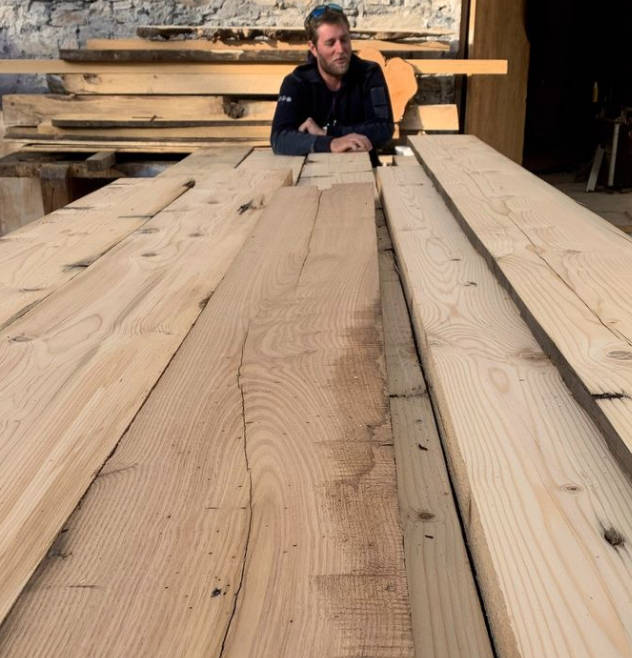

Cyril Bouclainville
Économiste de la construction et expert du bois de réemploi, Cyril Bouclainville développe une approche qui relie étude technique, transformation de la matière et fabrication.
Au fil de ses expériences, il a contribué au développement de la réutilisation des matériaux de construction en Savoie et à la création de projets mêlant innovation, durabilité et impact humain.
